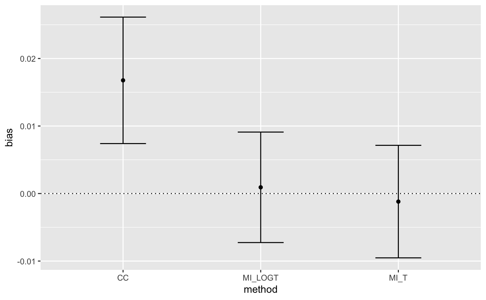
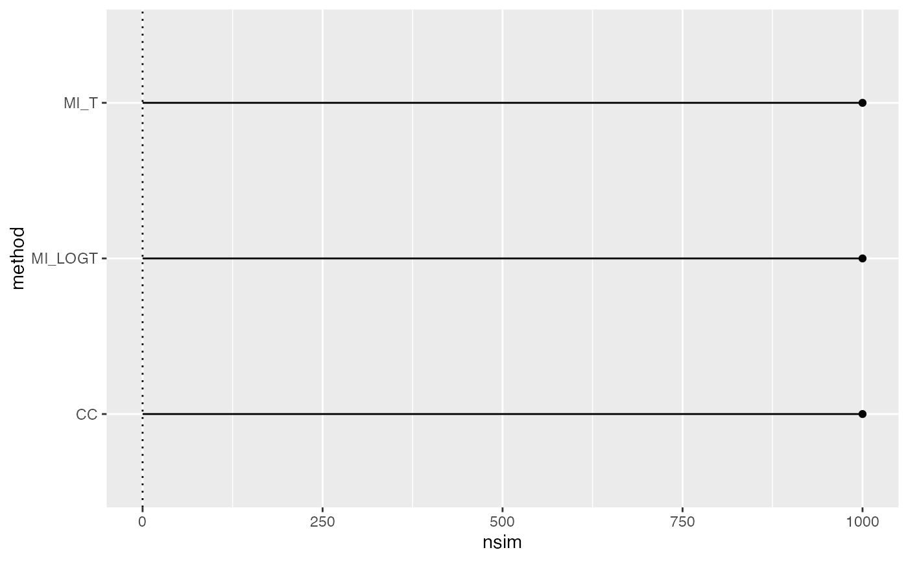

R/autoplot.summary.simsum.R
autoplot.summary.simsum.Rdautoplot method for summary.simsum objects
# S3 method for summary.simsum autoplot( object, type = "forest", stats = "nsim", target = NULL, fitted = TRUE, scales = "fixed", top = TRUE, density.legend = TRUE, zoom = 1, ... )
| object | An object of class |
|---|---|
| type | The type of the plot to be produced. Possible choices are: |
| stats | Summary statistic to plot, defaults to |
| target | Target of summary statistic, e.g. 0 for |
| fitted | Superimpose a fitted regression line, useful when |
| scales | Should scales be fixed ( |
| top | Should the legend for a nested loop plot be on the top side of the plot? Defaults to |
| density.legend | Should the legend for density and hexbin plots be included? Defaults to |
| zoom | A numeric value between 0 and 1 signalling that a zip plot should zoom on the top x% of the plot (to ease interpretation). Defaults to 1, where the whole zip plot is displayed. |
| ... | Not used. |
A ggplot object.
data("MIsim", package = "rsimsum") s <- rsimsum::simsum( data = MIsim, estvarname = "b", true = 0.5, se = "se", methodvar = "method", x = TRUE )#>#> Warning: Removed 3 rows containing missing values (geom_point).#> Warning: Removed 3 rows containing missing values (geom_point).